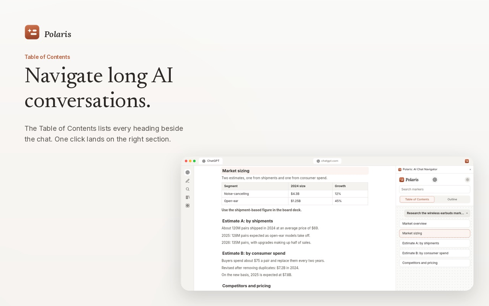
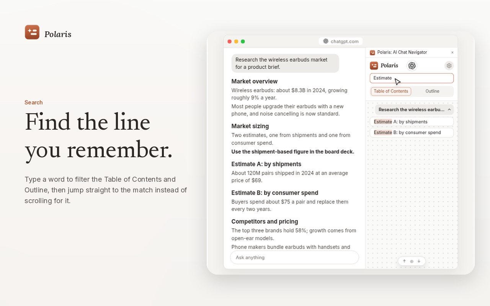
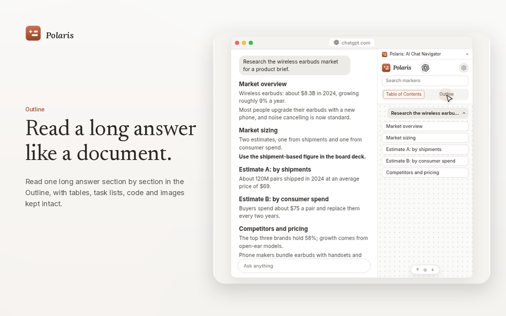

For ChatGPT
A table of contents for long ChatGPT conversations
Polaris: AI Chat Navigator is a browser extension that lists the headings of every ChatGPT answer beside the chat on chatgpt.com. Click a heading to land on that section instead of scrolling for it. It is free to start, works in Chrome, Edge and Firefox, and processes your chats locally.

Why long ChatGPT answers are hard to navigate
A research or planning chat in ChatGPT quickly grows to thousands of words, split across many headings and several replies. Checking one figure means scrolling up and up, and Ctrl+F jumps between matches that are not the one you want. ChatGPT has no outline of its own answers.
Polaris reads the headings, lists and tables in each answer and turns them into navigation you can click.
How to use it on ChatGPT
- Install Polaris from the Chrome Web Store, Edge Add-ons or Firefox Add-ons.
- Click the puzzle icon in the toolbar and pin Polaris.
- Open or refresh a conversation on chatgpt.com. Markers appear on the edge of the page for each heading, list and table.
- Hover a marker to preview a section, click it to jump there, or open the Polaris panel to use the Table of Contents, Outline and search.
What you get on chatgpt.com
- Table of Contents. Every heading of every answer, grouped under your prompt. One click lands on the right section.
- Edge markers. Headings, lists and tables become small markers on the edge of the page. You choose which structures get a marker; bold text and ordered lists stay off until you turn them on.
- Search. Type a word to filter the Table of Contents and Outline, then jump to the match.
- Outline. Read one long answer section by section, with tables, task lists, code and images kept. Copy a section or export the answer as Markdown or HTML.
- While it streams. Markers appear as soon as the first section is written, and the list stays put while the answer grows.


Free and Pro on ChatGPT
| Free | Pro | |
|---|---|---|
| Platforms | 2 at a time (ChatGPT can be one) | All 11 supported platforms |
| Table of Contents | Messages already loaded on the page | Also earlier messages kept by Long conversation mode |
| Markers, Outline, search, export | Included | Included |
| Price | $0, no payment details | One-time: $12.90 in the first 7 days of the trial, then $19.99. No subscription. |
Your ChatGPT conversations stay in your browser
Polaris reads the answer on the page you have open and builds its navigation right there. Conversation content is not sent to the developer or to any third party. Messages kept by Long conversation mode live only in the page’s memory and are cleared when you refresh or switch chats. Polaris never asks for your ChatGPT password. Read the privacy policy.
Questions
Does ChatGPT have a built-in table of contents for long answers?
No. ChatGPT shows answers as one long page. Polaris: AI Chat Navigator adds a Table of Contents beside the chat that lists every heading, so one click lands on the section you need.
Is Polaris free to use on ChatGPT?
Yes. The free version works on two supported platforms at a time, and ChatGPT can be one of them. Its Table of Contents covers the messages already loaded on the page. Pro adds every supported platform and Long conversation mode.
Does Polaris send my ChatGPT conversations anywhere?
No. Polaris reads the answer on the page you have open and builds the navigation locally in your browser. Conversation content is not sent to the developer or to third-party servers.
Can I export a ChatGPT answer by section?
Yes. In the Outline you can copy a single section or a full answer, or export it as Markdown or HTML.